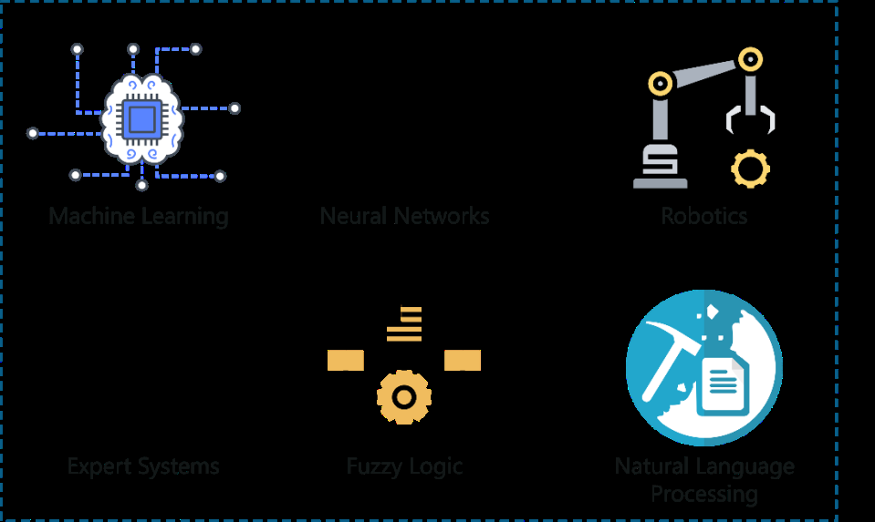

Artificial Intelligence
Links:
Branches of Artificial Intelligence
Artificial Intelligence can be used to solve real-world problems by implementing the following processes/ techniques:
- Machine Learning
- Deep Learning
- Natural Language Processing
- Robotics
- Expert Systems
- Fuzzy Logic
